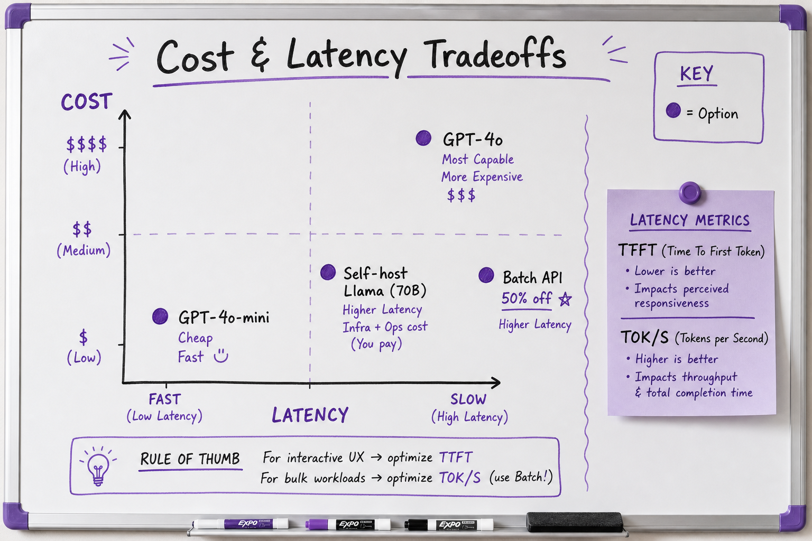
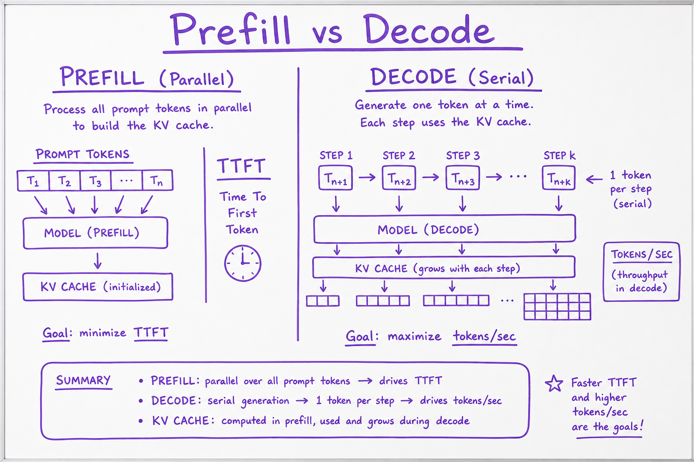
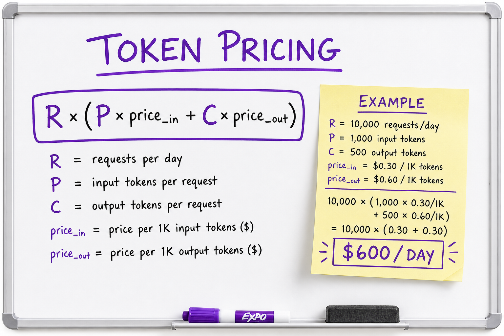

Cost & Latency Tradeoffs // Fundamentals
Every LLM feature is a three-way tradeoff: quality, latency (TTFT + tokens/sec), and cost ($/1M tokens + GPU). Model routing, caching, batching, and quantization are how production teams ship profitably.

Prefill sets time-to-first-token; decode sets throughput; pricing multiplies by token counts and model tier.
01 — What & Why
LLM products fail commercially when p95 latency or unit economics are ignored. Engineers must estimate $/request and size GPU pools before launch.
01a — Core Concepts
| Term | Definition | Gotcha |
|---|---|---|
| TTFT | Time to first token after request | Dominated by prefill length |
| TPS | Output tokens per second | Decode-bound; batching helps |
| Price in/out | $/1M input vs output tokens | Output often 2–4× input price |
| Continuous batching | Mix prefill/decode in GPU queue | vLLM core feature |
01b — API Surface
import tiktoken
def estimate_usd(prompt: str, completion_tokens: int,
price_in: float = 0.15, price_out: float = 0.60) -> float:
enc = tiktoken.encoding_for_model("gpt-4o-mini")
p = len(enc.encode(prompt))
return (p * price_in + completion_tokens * price_out) / 1_000_00002 — When to Use
| Technique | When |
|---|---|
| gpt-4o-mini router | Easy queries, classification |
| Batch API | Offline eval, enrichment (24h SLA) |
| Self-host Llama | High volume, data residency |
| Semantic cache | Repeated similar questions |
03 — Architecture
Request ──► Router (mini vs frontier) ──► GPU pool
│ ├── prefill (prompt len)
│ └── decode (output len)
└── cache hit ──► skip LLM ($0)04 — Prefill vs Decode
Long RAG contexts hurt TTFT; long answers hurt total latency and bill. See KV Cache.
05 — Token Pricing
Example: 1M req/day, P=2000, C=500, gpt-4o-mini ≈ $300 in + $300 out / day order-of-magnitude. Add 30% buffer for retries and tools.
06 — Model Routing
def pick_model(msg: str) -> str:
if len(msg) < 200 and not needs_tools(msg):
return "gpt-4o-mini"
return "gpt-4o"07 — Caching
OpenAI prompt caching for repeated prefixes; semantic cache for near-duplicate queries in support bots.
08 — Quantization
AWQ/GPTQ INT4 cuts memory 4×; small quality drop; improves $/token self-hosted.

Parallel prompt processing vs serial token generation.

Requests times input/output token rates.
09 — Production & Ops
- Dashboard: p50/p95 TTFT, TPS, $/successful task
- Budget alerts per feature flag
- Load test with production prompt distribution
10 — Where It Shows Up
AI vertical
11 — Common Pitfalls
- Using frontier model for all traffic
- Ignoring output token price
- No max_tokens cap
- Skipping load test at full context